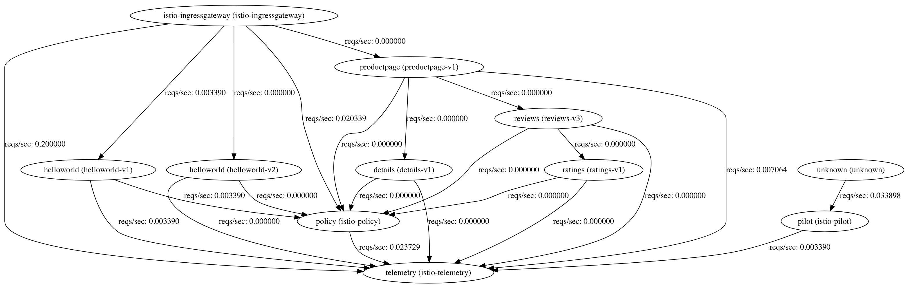
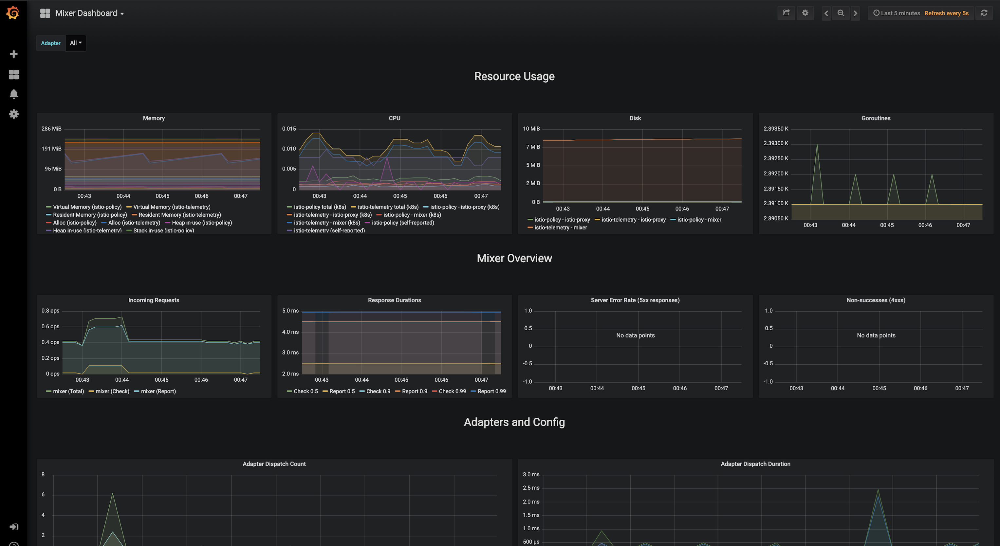
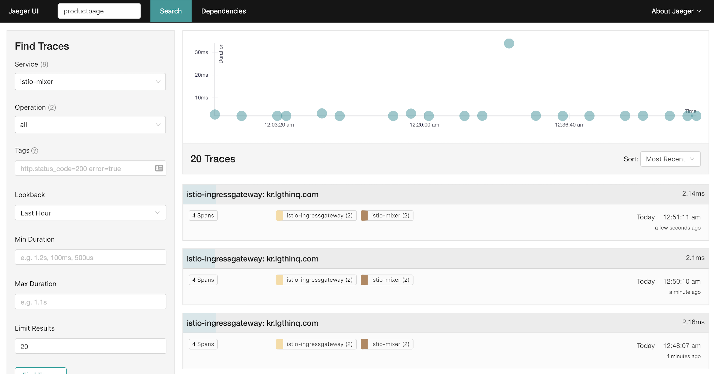
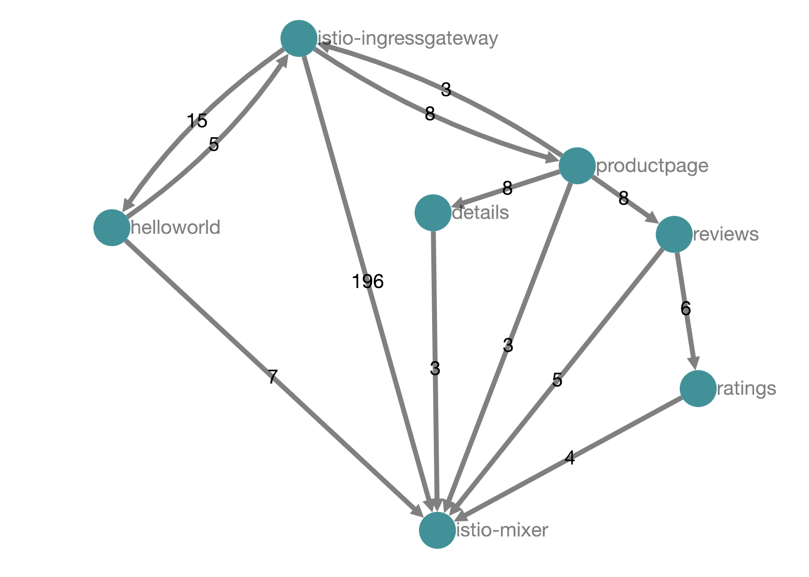
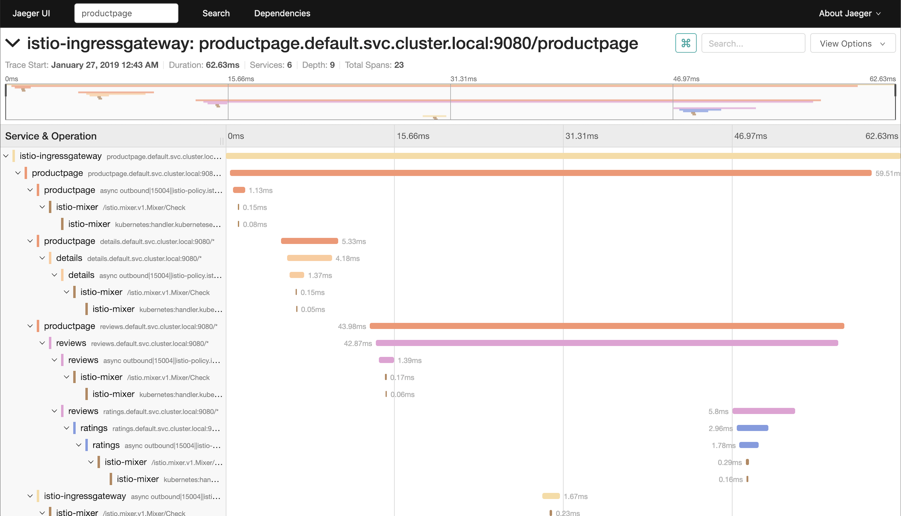

TGI Kubernetes 003: Istio
2019-01-27
TGIK 003: Istio
세번째 에피소드는 Istio에 다루고 있다. Istio를 돌려본 적은 없기 때문에 같이 배울 것이라고 한다.
Service Network
앞서 자신이 발표한 자료를 참고하여, 서비스 네트워크에 대해 간략히 언급한다. 해당 슬라이드는 The Operations Dividend - Joe Beda (LinuxCon North America 2016)를 참고한다.
여러 가지 타입의 마이크로 서비스가 있을 수 있다.
- Implementation Detail (어플리케이션의 세부 구현, 모놀리틱 서비스가 나뉘어 각각의 모듈로 세부 구현된 서비스 )
- Shared Artificat, Priavete Instance (MySQL 데이터베이스처럼 개인 인스턴스를 하나씩 가지고 개발)
- Shared Instance (큰 조직의 공유 인스턴스, 다른 곳의 여러 팀과 팀이 사용하는 단일 서비스)
- Big-S Servie (회사 외부로 확장된 완전히 구현된 Saas 모델, 예. SendGrid)
이러한 것들을 서비스 네트워크라고 부를 수 있고, Istio가 등장한 배경이라고 볼 수 있다. 서비스 네트워크 또는 서비스 메쉬에서는 서비스 과부하 발생 시에 다른 서비스나 네트워크로 처리하는 것도 중요하지만, 사용자를 가장한 공격자나 침입 탐지 등의 누가 이 서비스를 호출했는지에 대한 보안이나 신원확인도 중요하다고 한다.
Demo
데모 영상은 Istio 설치와 배포 과정 중에 발생한 서비스 계정과 관련된 오류의 원인을 파악하고 수정하는데 많은 시간을 할애하고 있고, 또한 2017년도의 지난 내용이라 아래와 같이, Istio 공식 문서를 참고하며 따로 정리하였다. (그러나 크게 바뀌진 않고 세부 내용만 조금 다를 뿐이다.)
Istio Demo
QuickStart Heptio를 사용해서 쿠버네티스 클러스터를 준비한다.
개인적인 학습을 목적으로 기존 템플릿을 조금 수정하였다. 5대의 워커 노드(t2.small) 등 사소한 몇 가지를 변경하였다. (참고로, 원래 저장소의 CloudFormation 템플릿은 burstable EC2 인스턴스 타입을 지원하지 않는다.) - https://github.com/ziwon/quickstart-heptio
최신 설치 방법 및 가이드는 다음 문서를 참조한다. (공식 문서가 워낙 잘되어 있어서 사실 따로 정리하는 게 큰 의미가 없어 보인다.)
Istio를 적당한 디렉토리에 다운 받는다.
$ mkdir -p ~/Workspace/TGIK/003
$ cd ~/Workspace/TGIK/003
$ curl -L https://git.io/getLatestIstio | sh -다운 받은 후에는 Path를 잡아줘야 하는데, kubectl, helm 등과 마찬가지로 다음과 같이 그냥 /usr/local/bin에 복사한다.
$ cp ./bin/istioctl /usr/local/bin먼저, Istio의 CRD(Custom Resource Definition)을 생성한다.
shell
kubectl apply -f install/kubernetes/helm/istio/templates/crds.yaml
$ kubectl apply -f install/kubernetes/helm/istio/templates/crds.yaml
customresourcedefinition.apiextensions.k8s.io/virtualservices.networking.istio.io created
customresourcedefinition.apiextensions.k8s.io/destinationrules.networking.istio.io created
customresourcedefinition.apiextensions.k8s.io/serviceentries.networking.istio.io created
customresourcedefinition.apiextensions.k8s.io/gateways.networking.istio.io created
customresourcedefinition.apiextensions.k8s.io/envoyfilters.networking.istio.io created
customresourcedefinition.apiextensions.k8s.io/policies.authentication.istio.io created
customresourcedefinition.apiextensions.k8s.io/meshpolicies.authentication.istio.io created
customresourcedefinition.apiextensions.k8s.io/httpapispecbindings.config.istio.io created
customresourcedefinition.apiextensions.k8s.io/httpapispecs.config.istio.io created
customresourcedefinition.apiextensions.k8s.io/quotaspecbindings.config.istio.io created
customresourcedefinition.apiextensions.k8s.io/quotaspecs.config.istio.io created
customresourcedefinition.apiextensions.k8s.io/rules.config.istio.io created
customresourcedefinition.apiextensions.k8s.io/attributemanifests.config.istio.io created
customresourcedefinition.apiextensions.k8s.io/bypasses.config.istio.io created
customresourcedefinition.apiextensions.k8s.io/circonuses.config.istio.io created
customresourcedefinition.apiextensions.k8s.io/deniers.config.istio.io created
customresourcedefinition.apiextensions.k8s.io/fluentds.config.istio.io created
customresourcedefinition.apiextensions.k8s.io/kubernetesenvs.config.istio.io created
customresourcedefinition.apiextensions.k8s.io/listcheckers.config.istio.io created
customresourcedefinition.apiextensions.k8s.io/memquotas.config.istio.io created
customresourcedefinition.apiextensions.k8s.io/noops.config.istio.io created
customresourcedefinition.apiextensions.k8s.io/opas.config.istio.io created
customresourcedefinition.apiextensions.k8s.io/prometheuses.config.istio.io created
customresourcedefinition.apiextensions.k8s.io/rbacs.config.istio.io created
customresourcedefinition.apiextensions.k8s.io/redisquotas.config.istio.io created
customresourcedefinition.apiextensions.k8s.io/servicecontrols.config.istio.io created
customresourcedefinition.apiextensions.k8s.io/signalfxs.config.istio.io created
customresourcedefinition.apiextensions.k8s.io/solarwindses.config.istio.io created
customresourcedefinition.apiextensions.k8s.io/stackdrivers.config.istio.io created
customresourcedefinition.apiextensions.k8s.io/statsds.config.istio.io created
customresourcedefinition.apiextensions.k8s.io/stdios.config.istio.io created
customresourcedefinition.apiextensions.k8s.io/apikeys.config.istio.io created
customresourcedefinition.apiextensions.k8s.io/authorizations.config.istio.io created
customresourcedefinition.apiextensions.k8s.io/checknothings.config.istio.io created
customresourcedefinition.apiextensions.k8s.io/kuberneteses.config.istio.io created
customresourcedefinition.apiextensions.k8s.io/listentries.config.istio.io created
customresourcedefinition.apiextensions.k8s.io/logentries.config.istio.io created
customresourcedefinition.apiextensions.k8s.io/edges.config.istio.io created
customresourcedefinition.apiextensions.k8s.io/metrics.config.istio.io created
customresourcedefinition.apiextensions.k8s.io/quotas.config.istio.io created
customresourcedefinition.apiextensions.k8s.io/reportnothings.config.istio.io created
customresourcedefinition.apiextensions.k8s.io/servicecontrolreports.config.istio.io created
customresourcedefinition.apiextensions.k8s.io/tracespans.config.istio.io created
customresourcedefinition.apiextensions.k8s.io/rbacconfigs.rbac.istio.io created
customresourcedefinition.apiextensions.k8s.io/serviceroles.rbac.istio.io created
customresourcedefinition.apiextensions.k8s.io/servicerolebindings.rbac.istio.io created
customresourcedefinition.apiextensions.k8s.io/adapters.config.istio.io created
customresourcedefinition.apiextensions.k8s.io/instances.config.istio.io created
customresourcedefinition.apiextensions.k8s.io/templates.config.istio.io created
customresourcedefinition.apiextensions.k8s.io/handlers.config.istio.io created다음으로, 데모 리소스를 설치한다. install 디렉토리에는 상호 TLS 인증용(istio-demo-auth.yaml)과 비인증용(istio-demo.yaml) 두 가지 파일이 있는데, istio-demo-auth.yaml를 사용한다.
덧붙여서 학습용 목적의 개인 클러스터의 경우, 워커 노드의 리소스가 매우 작기 때문에, 기본 요구 사항에 맞는 노드를 찾지 못해 Pod의 스케쥴링
Pending이 발생할 수 있다. 일단, 데모이니 생략하기로 한다. (또는 리밋을 걸어도 무방)install/kubernetes/istio-demo.yaml파일의 13565 라인에서 13568 라인까지를 삭제한다.
- name: PILOT_CACHE_SQUASH
value: "5"
- name: GODEBUG
value: "gctrace=2"
- name: PILOT_PUSH_THROTTLE_COUNT
value: "100"
- name: PILOT_TRACE_SAMPLING
value: "100"
13565 resources:
requests:
cpu: 500m
13568 memory: 2048Mi다음과 같이, Istio 컴포넌트를 설치한다.
kubectl apply -f install/kubernetes/istio-demo-auth.yaml
$ kubectl apply -f install/kubernetes/istio-demo-auth.yaml
namespace/istio-system created
configmap/istio-galley-configuration created
configmap/istio-grafana-custom-resources created
configmap/istio-grafana-configuration-dashboards created
configmap/istio-grafana created
configmap/istio-statsd-prom-bridge created
configmap/prometheus created
configmap/istio-security-custom-resources created
configmap/istio created
configmap/istio-sidecar-injector created
serviceaccount/istio-galley-service-account created
serviceaccount/istio-egressgateway-service-account created
serviceaccount/istio-ingressgateway-service-account created
serviceaccount/istio-grafana-post-install-account created
clusterrole.rbac.authorization.k8s.io/istio-grafana-post-install-istio-system created
clusterrolebinding.rbac.authorization.k8s.io/istio-grafana-post-install-role-binding-istio-system created
job.batch/istio-grafana-post-install created
serviceaccount/istio-mixer-service-account created
serviceaccount/istio-pilot-service-account created
serviceaccount/prometheus created
serviceaccount/istio-cleanup-secrets-service-account created
clusterrole.rbac.authorization.k8s.io/istio-cleanup-secrets-istio-system created
clusterrolebinding.rbac.authorization.k8s.io/istio-cleanup-secrets-istio-system created
job.batch/istio-cleanup-secrets created
serviceaccount/istio-security-post-install-account created
clusterrole.rbac.authorization.k8s.io/istio-security-post-install-istio-system created
clusterrolebinding.rbac.authorization.k8s.io/istio-security-post-install-role-binding-istio-system created
job.batch/istio-security-post-install created
serviceaccount/istio-citadel-service-account created
serviceaccount/istio-sidecar-injector-service-account created
customresourcedefinition.apiextensions.k8s.io/virtualservices.networking.istio.io unchanged
customresourcedefinition.apiextensions.k8s.io/destinationrules.networking.istio.io unchanged
customresourcedefinition.apiextensions.k8s.io/serviceentries.networking.istio.io unchanged
customresourcedefinition.apiextensions.k8s.io/gateways.networking.istio.io unchanged
customresourcedefinition.apiextensions.k8s.io/envoyfilters.networking.istio.io unchanged
customresourcedefinition.apiextensions.k8s.io/httpapispecbindings.config.istio.io unchanged
customresourcedefinition.apiextensions.k8s.io/httpapispecs.config.istio.io unchanged
customresourcedefinition.apiextensions.k8s.io/quotaspecbindings.config.istio.io unchanged
customresourcedefinition.apiextensions.k8s.io/quotaspecs.config.istio.io unchanged
customresourcedefinition.apiextensions.k8s.io/rules.config.istio.io unchanged
customresourcedefinition.apiextensions.k8s.io/attributemanifests.config.istio.io unchanged
customresourcedefinition.apiextensions.k8s.io/bypasses.config.istio.io unchanged
customresourcedefinition.apiextensions.k8s.io/circonuses.config.istio.io unchanged
customresourcedefinition.apiextensions.k8s.io/deniers.config.istio.io unchanged
customresourcedefinition.apiextensions.k8s.io/fluentds.config.istio.io unchanged
customresourcedefinition.apiextensions.k8s.io/kubernetesenvs.config.istio.io unchanged
customresourcedefinition.apiextensions.k8s.io/listcheckers.config.istio.io unchanged
customresourcedefinition.apiextensions.k8s.io/memquotas.config.istio.io unchanged
customresourcedefinition.apiextensions.k8s.io/noops.config.istio.io unchanged
customresourcedefinition.apiextensions.k8s.io/opas.config.istio.io unchanged
customresourcedefinition.apiextensions.k8s.io/prometheuses.config.istio.io unchanged
customresourcedefinition.apiextensions.k8s.io/rbacs.config.istio.io unchanged
customresourcedefinition.apiextensions.k8s.io/redisquotas.config.istio.io unchanged
customresourcedefinition.apiextensions.k8s.io/servicecontrols.config.istio.io unchanged
customresourcedefinition.apiextensions.k8s.io/signalfxs.config.istio.io unchanged
customresourcedefinition.apiextensions.k8s.io/solarwindses.config.istio.io unchanged
customresourcedefinition.apiextensions.k8s.io/stackdrivers.config.istio.io unchanged
customresourcedefinition.apiextensions.k8s.io/statsds.config.istio.io unchanged
customresourcedefinition.apiextensions.k8s.io/stdios.config.istio.io unchanged
customresourcedefinition.apiextensions.k8s.io/apikeys.config.istio.io unchanged
customresourcedefinition.apiextensions.k8s.io/authorizations.config.istio.io unchanged
customresourcedefinition.apiextensions.k8s.io/checknothings.config.istio.io unchanged
customresourcedefinition.apiextensions.k8s.io/kuberneteses.config.istio.io unchanged
customresourcedefinition.apiextensions.k8s.io/listentries.config.istio.io unchanged
customresourcedefinition.apiextensions.k8s.io/logentries.config.istio.io unchanged
customresourcedefinition.apiextensions.k8s.io/edges.config.istio.io unchanged
customresourcedefinition.apiextensions.k8s.io/metrics.config.istio.io unchanged
customresourcedefinition.apiextensions.k8s.io/quotas.config.istio.io unchanged
customresourcedefinition.apiextensions.k8s.io/reportnothings.config.istio.io unchanged
customresourcedefinition.apiextensions.k8s.io/servicecontrolreports.config.istio.io unchanged
customresourcedefinition.apiextensions.k8s.io/tracespans.config.istio.io unchanged
customresourcedefinition.apiextensions.k8s.io/rbacconfigs.rbac.istio.io unchanged
customresourcedefinition.apiextensions.k8s.io/serviceroles.rbac.istio.io unchanged
customresourcedefinition.apiextensions.k8s.io/servicerolebindings.rbac.istio.io unchanged
customresourcedefinition.apiextensions.k8s.io/adapters.config.istio.io unchanged
customresourcedefinition.apiextensions.k8s.io/instances.config.istio.io unchanged
customresourcedefinition.apiextensions.k8s.io/templates.config.istio.io unchanged
customresourcedefinition.apiextensions.k8s.io/handlers.config.istio.io unchanged
clusterrole.rbac.authorization.k8s.io/istio-galley-istio-system created
clusterrole.rbac.authorization.k8s.io/istio-egressgateway-istio-system created
clusterrole.rbac.authorization.k8s.io/istio-ingressgateway-istio-system created
clusterrole.rbac.authorization.k8s.io/istio-mixer-istio-system created
clusterrole.rbac.authorization.k8s.io/istio-pilot-istio-system created
clusterrole.rbac.authorization.k8s.io/prometheus-istio-system created
clusterrole.rbac.authorization.k8s.io/istio-citadel-istio-system created
clusterrole.rbac.authorization.k8s.io/istio-sidecar-injector-istio-system created
clusterrolebinding.rbac.authorization.k8s.io/istio-galley-admin-role-binding-istio-system created
clusterrolebinding.rbac.authorization.k8s.io/istio-egressgateway-istio-system created
clusterrolebinding.rbac.authorization.k8s.io/istio-ingressgateway-istio-system created
clusterrolebinding.rbac.authorization.k8s.io/istio-mixer-admin-role-binding-istio-system created
clusterrolebinding.rbac.authorization.k8s.io/istio-pilot-istio-system created
clusterrolebinding.rbac.authorization.k8s.io/prometheus-istio-system created
clusterrolebinding.rbac.authorization.k8s.io/istio-citadel-istio-system created
clusterrolebinding.rbac.authorization.k8s.io/istio-sidecar-injector-admin-role-binding-istio-system created
service/istio-galley created
service/istio-egressgateway created
service/istio-ingressgateway created
service/grafana created
service/istio-policy created
service/istio-telemetry created
service/istio-pilot created
service/prometheus created
service/istio-citadel created
service/servicegraph created
service/istio-sidecar-injector created
deployment.extensions/istio-galley created
deployment.extensions/istio-egressgateway created
deployment.extensions/istio-ingressgateway created
deployment.extensions/grafana created
deployment.extensions/istio-policy created
deployment.extensions/istio-telemetry created
deployment.extensions/istio-pilot created
deployment.extensions/prometheus created
deployment.extensions/istio-citadel created
deployment.extensions/servicegraph created
deployment.extensions/istio-sidecar-injector created
deployment.extensions/istio-tracing created
gateway.networking.istio.io/istio-autogenerated-k8s-ingress created
horizontalpodautoscaler.autoscaling/istio-egressgateway created
horizontalpodautoscaler.autoscaling/istio-ingressgateway created
horizontalpodautoscaler.autoscaling/istio-policy created
horizontalpodautoscaler.autoscaling/istio-telemetry created
horizontalpodautoscaler.autoscaling/istio-pilot created
service/jaeger-query created
service/jaeger-collector created
service/jaeger-agent created
service/zipkin created
service/tracing created
mutatingwebhookconfiguration.admissionregistration.k8s.io/istio-sidecar-injector created
attributemanifest.config.istio.io/istioproxy created
attributemanifest.config.istio.io/kubernetes created
stdio.config.istio.io/handler created
logentry.config.istio.io/accesslog created
logentry.config.istio.io/tcpaccesslog created
rule.config.istio.io/stdio created
rule.config.istio.io/stdiotcp created
metric.config.istio.io/requestcount created
metric.config.istio.io/requestduration created
metric.config.istio.io/requestsize created
metric.config.istio.io/responsesize created
metric.config.istio.io/tcpbytesent created
metric.config.istio.io/tcpbytereceived created
prometheus.config.istio.io/handler created
rule.config.istio.io/promhttp created
rule.config.istio.io/promtcp created
kubernetesenv.config.istio.io/handler created
rule.config.istio.io/kubeattrgenrulerule created
rule.config.istio.io/tcpkubeattrgenrulerule created
kubernetes.config.istio.io/attributes created
destinationrule.networking.istio.io/istio-policy created
destinationrule.networking.istio.io/istio-telemetry created설치 후에는 서비스 목록을 확인한다.
$ kubectl get svc -n istio-system
NAME TYPE CLUSTER-IP EXTERNAL-IP PORT(S) AGE
grafana ClusterIP 10.103.36.168 <none> 3000/TCP 1m
istio-citadel ClusterIP 10.105.126.133 <none> 8060/TCP,9093/TCP 1m
istio-egressgateway ClusterIP 10.96.167.111 <none> 80/TCP,443/TCP 1m
istio-galley ClusterIP 10.101.13.252 <none> 443/TCP,9093/TCP 1m
istio-ingressgateway LoadBalancer 10.110.86.12 a9ea060f3215111e98ff402da3f66b58-1123416063.ap-northeast-2.elb.amazonaws.com 80:31380/TCP,443:31390/TCP,31400:31400/TCP,15011:32529/TCP,8060:32743/TCP,853:32409/TCP,15030:32031/TCP,15031:30142/TCP 1m
istio-pilot ClusterIP 10.100.252.232 <none> 15010/TCP,15011/TCP,8080/TCP,9093/TCP 1m
istio-policy ClusterIP 10.105.64.250 <none> 9091/TCP,15004/TCP,9093/TCP 1m
istio-sidecar-injector ClusterIP 10.97.255.80 <none> 443/TCP 1m
istio-telemetry ClusterIP 10.100.243.108 <none> 9091/TCP,15004/TCP,9093/TCP,42422/TCP 1m
jaeger-agent ClusterIP None <none> 5775/UDP,6831/UDP,6832/UDP 1m
jaeger-collector ClusterIP 10.96.82.132 <none> 14267/TCP,14268/TCP 1m
jaeger-query ClusterIP 10.97.191.144 <none> 16686/TCP 1m
prometheus ClusterIP 10.104.183.23 <none> 9090/TCP 1m
servicegraph ClusterIP 10.102.175.176 <none> 8088/TCP 1m
tracing ClusterIP 10.103.166.96 <none> 80/TCP 1m
zipkin ClusterIP 10.108.3.146 <none> 9411/TCP다음과 같이, Istio 설치가 완료되었다.
$ kubectl get po -n istio-system
NAME READY STATUS RESTARTS AGE
grafana-7f6cd4bf56-lqgck 1/1 Running 0 2m
istio-citadel-7dd558dcf-m2qjf 1/1 Running 0 2m
istio-cleanup-secrets-shkfz 0/1 Completed 0 2m
istio-egressgateway-8666f9bdcc-s5xpv 1/1 Running 0 2m
istio-galley-787758f7b8-lc97g 1/1 Running 0 2m
istio-grafana-post-install-2n6zv 0/1 Completed 0 2m
istio-ingressgateway-645bbdc9db-znhnx 1/1 Running 0 2m
istio-pilot-86b6679ddf-7k795 0/2 Pending 0 2m
istio-policy-6b59f7bdfd-9xgw6 2/2 Running 0 2m
istio-security-post-install-vpbh4 0/1 Completed 0 2m
istio-sidecar-injector-d7f98d9cb-ght2x 1/1 Running 0 2m
istio-telemetry-f94b484cd-wsd72 2/2 Running 0 2m
istio-tracing-7596597bd7-wh57j 1/1 Running 0 2m
prometheus-76db5fddd5-w5zrl 1/1 Running 0 2m
servicegraph-56dddff777-q66jx 1/1 Running 0 2mEnvoy 컨테이너 주입
Instio Sidecar Injector는 Envoy 컨테이너를 주입하는 역할을 하는데, 두 가지 방법이 있다.
특정 네임스페이스를 라벨링하여 자동으로 주입한다.
$ kubectl label namespace <namespace> istio-injection=enabled
$ kubectl create -n <namespace> -f <your-app-spec>.yaml또는 다음과 같이 istioctl을 사용하여 수동으로 주입할 수 있다.
$ istioctl kube-inject -f <your-app-spec>.yaml | kubectl apply -f -이하, 아래 예제 서비스는 모두 istioctl을 사용해서 배포한다.
HelloWorld 예제
먼저, 다운 받아 놓은 Istio의 sample 폴더 밑에 있는 hello-world 서비스를 배포해보자.
$ kubectl apply -f <(istioctl kube-inject -f helloworld.yaml)Istio 인그레스 컨트롤러에서 획득한 ELB 주소와 포트로 접속하면, 다음과 같이 Hello version 1과 Hello version 2로 로드밸런싱 되는 것을 볼 수 있다.
$ curl http://af4e1ca06216211e9bc6d02f1aa55be0-1809927191.ap-northeast-2.elb.amazonaws.com/hello
Hello version: v1, instance: helloworld-v1-67f4b97db-ldzhl
$ curl http://af4e1ca06216211e9bc6d02f1aa55be0-1809927191.ap-northeast-2.elb.amazonaws.com/hello
Hello version: v2, instance: helloworld-v2-c4bb7875c-rnpnd
$ curl http://af4e1ca06216211e9bc6d02f1aa55be0-1809927191.ap-northeast-2.elb.amazonaws.com/hello
Hello version: v1, instance: helloworld-v1-67f4b97db-ldzhl
$ curl http://af4e1ca06216211e9bc6d02f1aa55be0-1809927191.ap-northeast-2.elb.amazonaws.com/hello
Hello version: v2, instance: helloworld-v2-c4bb7875c-rnpndBookInfo 예제
BookInfo 예제의 배포도 HelloWorld와 동일하다.
자세한 것은 다음 문서를 참고한다.
BookInfo 예제도 접속할 때마다, Istio 서비스 메쉬로 화면이 갱신되는 것을 확인할 수 있다.

모니터링
Service Graph
서비스 그래프는 포트 포워딩 후에, http://localhost:8088/dotviz에 접속하게 되면 서비스 그래프를 확인할 수 있다.
$ kubectl -n istio-system port-forward $(kubectl -n istio-system get pod -l app=servicegraph -o jsonpath='{.items[0].metadata.name}' 8088:8080 &
그 외에도 다양한 방법의 시각화를 제공하고 있다.
/force/forcegraph.html (D3.js 시각화 그래프)
/dotviz (정적 시각화 그래프)
/dotgraph (DOT 직렬화 데이터)
/d3graph (D3 visualization JSON 직렬화 데이터)
/graph (JSON 직렬화 데이터)
이상, 자세한 내용은 다음 링크를 참고한다.
Graphana
또한 Istio 메쉬 대시보드, 서비스 대시보드, 워크 로드 대시보드 등을 비릇해 다양한 대시보드를 통해 메트릭을 확인할 수 있다.
$ kubectl -n istio-system port-forward $(kubectl -n istio-system get pod -l app=grafana -o jsonpath='{.items[0].metadata.name}') 3000:3000 &
자세한 내용은 다음 링크를 참고한다.
Jaeger
예거라는 분산 로그 추적 시스템을 통해 마이크로 서비스의 API 하나하나를 추적할 수 있다.
$ kubectl port-forward -n istio-system $(kubectl get pod -n istio-system -l app=jaeger -o jsonpath='{.items[0].metadata.name}') 16686:16686 &  
이상, 자세한 내용은 다음 링크를 참고한다.
Service Account 오류 수정
2017년 데모 당시에는 Istio RBAC 활성화시에 제대로 배포되지 않는 버그가 있었다. 그 과정이 흥미진진하고 마지막에 해결하는 모습이 멋있어서 그 과정을 간략히 요약해보았다.
* failed to register Third-Party Resources. User "system:serviceaccount:default:istio-pilot-service-account" cannot get thirdpartyresources.exentions at the cluster scope. (get thirdpartyresources.extensions istio-config.istio.io)
* failed to register Thrid-Party REsources. Failed to create all TPRsIstio 네임스페이스가 디폴트가 아닌 경우에 ClusterRoleBinding을 변경해줘야 하는 이슈 PR(333)
Istio mixer가 뭔가 하는 게 있는데, RBAC 롤을 제대로 안 주고 있는 것 같다고 추측. 이에 누군가가 mixer가 pilot 애셋을 가지고 있는지 확인해보라고 함.
$ kubectl edit deployment istio-mixer
serviceAccount: istio-pilot-service-account- 추후 RBAC이 활성화 되었을 때 k8s TPR이 생성되지 않는 동일한 327번 이슈 확인